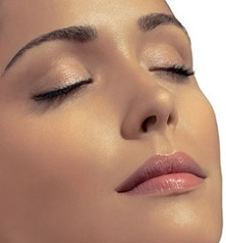

وهي البشرة التي تمتاز بإفراز الكثير من الزيوت والدّهون، ممّا يؤدي إلى وجود مجموعة من العلامات التي يمكن ملاحظتها على الأشخاص الذين يمتلكوها

| نوع العنايه | صباحاً | مساءً |
|---|---|---|
| الترطيب | مرطب للبشره الدهنيه بحمض الهايلورونيك | بإمكان الفرد استخدام المرطب الصباحي أو استبداله بمرطب آخر أكثر ترطيبًا بهدف التعزيز من عمليات تجديد البشرة أثناء النوم. |
| الغسول | عادة ما ينصح باستخدام الغسولات ذات الأساس المائي ضمن روتين العناية بالبشرة الدهنية الصباحي | استخدام الغسولات التي تأتي بأساس زيتي، فهي فعالة أكثر لإزالة الأوساخ المتراكمة والمكياج |
| التونر | ينصح عادة باختيار أنواع التونر التي تحتوي على مواد تقشير لطيفة على البشرة مثل حمض السالسيليك | التونر ليلاً بنفس الطريقة التي يستخدم بها صباحاً، وذلك للحرص على إزالة جميع الأوساخ وبقايا المكياج العالقة. |